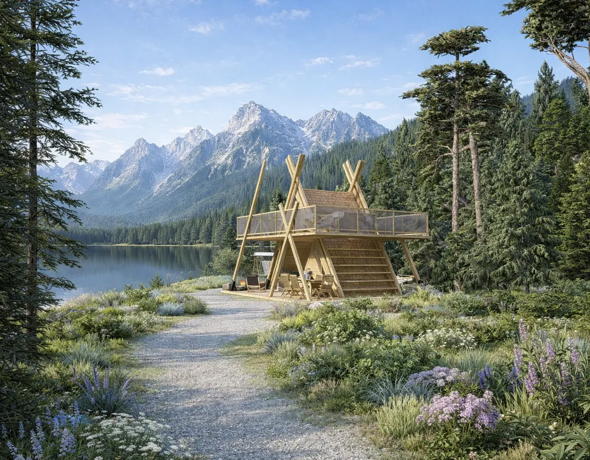
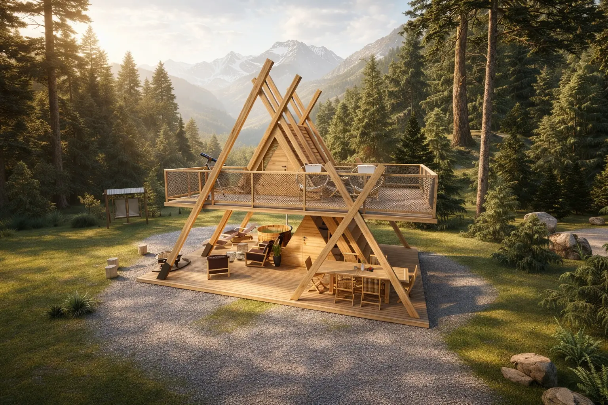
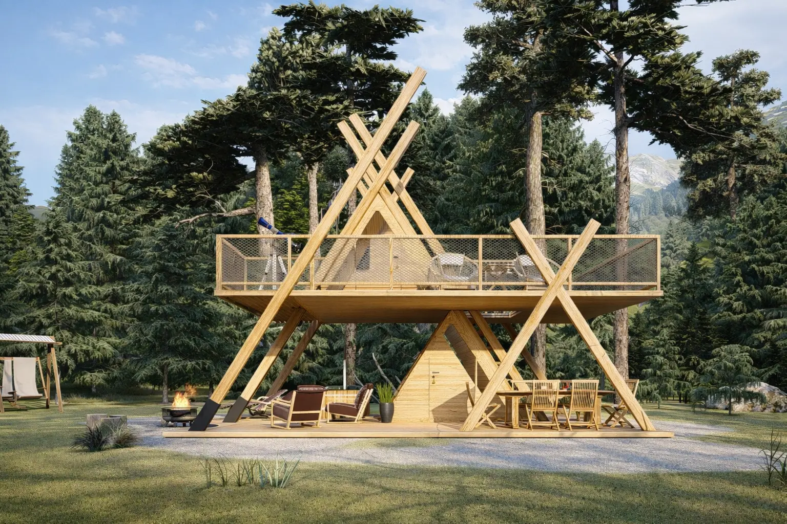
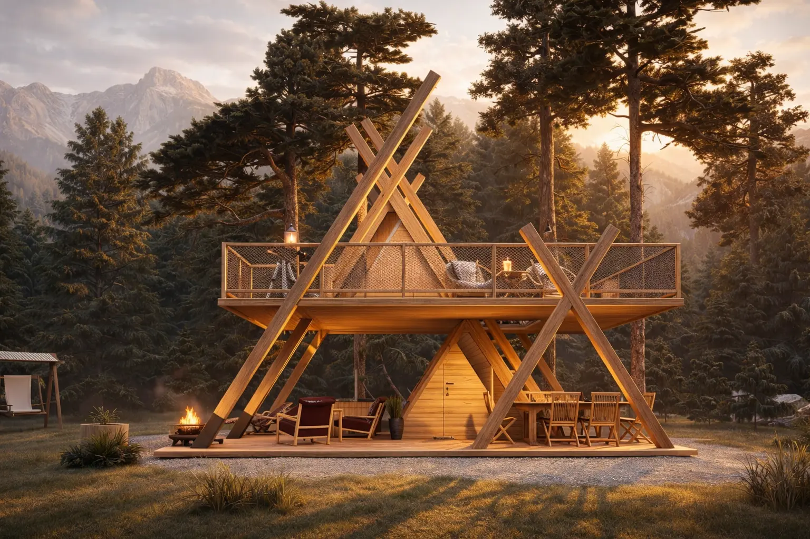
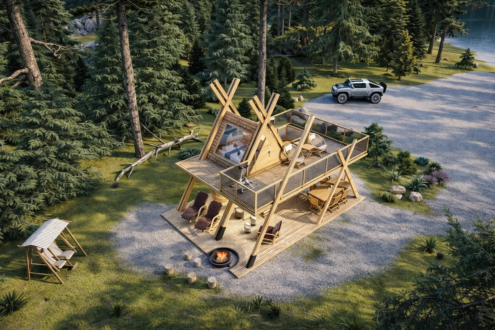
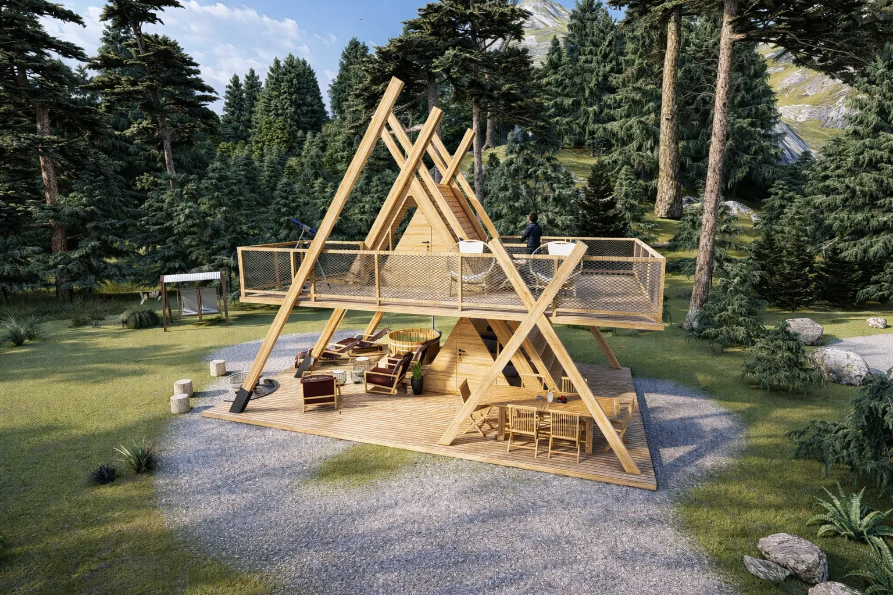
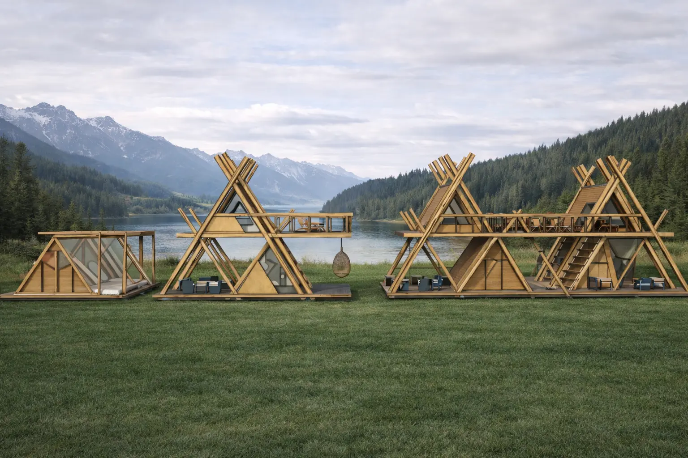
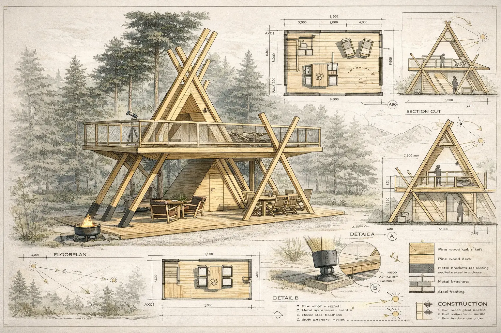

Glamping tower · Concept design
ANA Glamping Tower
Hospitality concept · Architectural CGI · Technical and resort presentation
A vertical retreat that turns the landscape into the main experience.
ANA is an elevated timber glamping concept designed around panoramic views and outdoor living. Its expressive A-frame structure supports a generous upper terrace, while the sheltered ground level creates space for dining, relaxation and social moments. The image series explores the tower as a standalone destination and as a repeatable hospitality unit within a wider resort setting.
LocationAlpine concept study
Project typeGlamping tower · Hospitality
Design focusPanoramic deck · Timber structure









Project scope
From a distinctive structure to a complete hospitality story.
Continue exploring
Related hospitality studies.
Available for collaboration